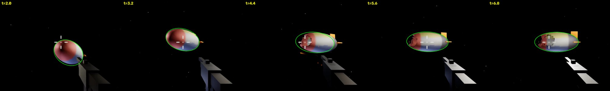
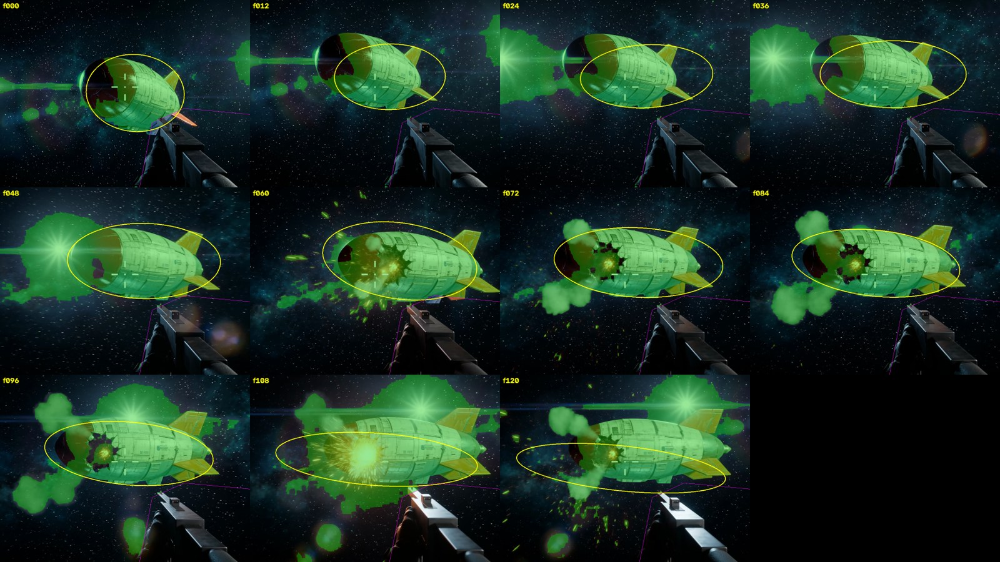
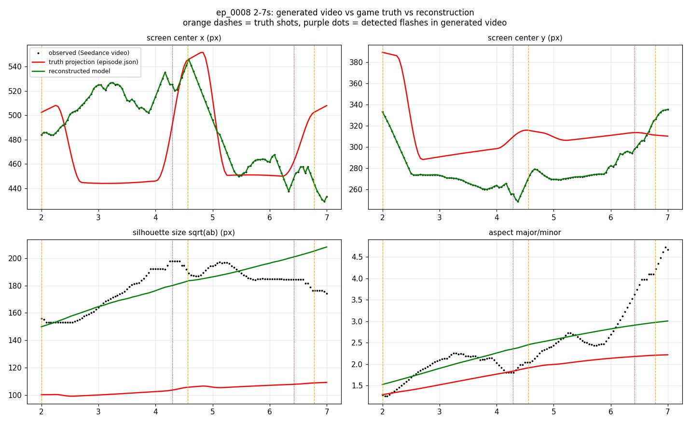
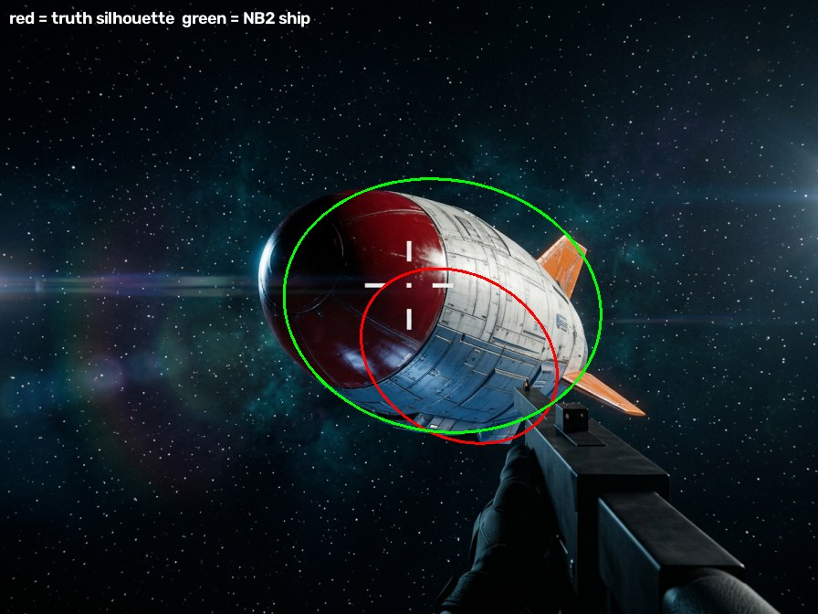
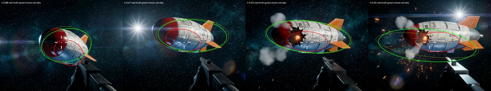

运行时改造的 UE6 游戏 × 生成式视频 · 实验记录
上一篇(03)肉眼能看出 Seedance 生成的飞艇比源片段"胖了、飘了",但这只是感觉。这次的问题是定量的:生成视频里的船,等效外形是什么?隐含的相机轨迹是什么?偏差锚在哪一帧、哪个输入上?为此在 REFLEX 仓库写了 tools/video_recon.py,一条 calib → observe → fit 的三段管线,输入是 121 帧 @24fps、1664×1248 的 seedance_ep0008_nb2_v2_geolock.mp4,真值是引擎逐帧记录的 episode.json(片段 t=0 对应 episode t=2.0,源画面为 1280×720 母版上 192,48 起 896×672 的裁切,f=640px,主点 448,312)。
把真值椭球当作 dual-quadric,用记录的相机位姿解析投影回源片段。一个容易踩的细节:引擎记录的 radii 是壳的中面,外表面要再加 22cm 半壳厚。修正后逐帧轮廓紧贴船体——投影模型可信,后面所有拟合都建立在这一步之上。

生成视频里没有任何真值,只能靠分割。最终配方:亮度(lum>55)∪ 红色主导掩码(兜住暗红船头)→ 扣掉静态枪械多边形 → 重腐蚀取核 + 上一帧椭圆门控(拒掉太阳光晕、星云、泄气烟羽)→ 有限"回生长" → 在环带边缘点上做 IRLS 鲁棒椭圆拟合,并逐帧钳制(中心 ≤5px、轴长 ≤1.5%、角度 ≤2°)。产物是 observations.json,121/121 帧全部稳定。

内层对每帧用 2×2 牛顿解 yaw/pitch,让投影中心对准观测中心;外层做鲁棒最小二乘,同时拟合椭球三轴、焦距、时间偏移和轨道族参数(theta0/w/r_p/z_p),匹配轮廓协方差。规范(gauge)选择:纯图像数据分不开"船变大"和"相机变近",所以把相机距离参数(r0/r_amp/z_amp)钉死在真值上,尺寸变化全部记在船头上。拟合残差 RMS 0.145,拟合焦距 697.5px(假设 640px),时偏 −0.036s。

NB2 参考图相对真值 t=2.0 帧:线性放大 ×1.54(面积 ×2.4),中心偏移 (−18,−55)px。而 Seedance 生成视频首帧的漂移量是 ×1.557、(−18,−56)px——与 NB2 逐位一致。结论只有一个:Seedance 把几何锚定在 @Image1(参考图)上,而不是 @Video1(源片段)上。03 里看到的"整体偏胖偏移"不是扩散噪声,是条件优先级问题。

漂移不是常数:片内从 ×1.53 涨到峰值 ×1.92(t≈4.5–5.5)再回落到 ×1.6,而真值轮廓几乎恒定——生成的船在"呼吸"。相对运动的形状倒是被部分复制了:开头的下压、t≈4.6 的横移峰、结尾的抬升都在。但节奏慢了:隐含轨道角速度 w=−0.158,真值 −0.235,慢 33%,像是模型自带的"电影感"运镜先验。等效椭球(距离钉死规范下)660.9×161.9×210.6 vs 真值 339.6×162.1×153.6:长 2 倍、高 1.4 倍、宽度不变。鳍和早期船头分割低估会略微夸大长轴,但远解释不了 2 倍。开枪事件:窗口内真值 3 发(2.0/4.56/6.78s,t=2.0 那发正好在片头没留爆闪),生成视频保留 2 次爆闪(4.29/6.42s),各提前约 0.3s。

三种污染源:镜头光晕、爆炸火花、泄气烟羽。纯阈值不可分——光晕核心的亮度和船体完全重叠;单纯跟踪门控也曾发散——一旦凸包吃进光晕,下一帧门控跟着变大,正反馈直接跑飞。最终靠四件套稳住:重腐蚀取核(只信最结实的像素)→ 上帧椭圆门控 → 有限回生长 → 环带 IRLS 鲁棒拟合 + 逐帧钳制。121/121 帧无一发散。
逆向管线把 03 的主观印象变成了可复现实数:几何锚定在参考图(×1.54 逐位对上)、尺寸会呼吸(峰值 ×1.92)、运动形状可复制但节奏慢 33%、离散事件三保二且提前 0.3s。想要像素级对齐,提示词和参考图给的"软条件"不够,得上结构硬条件——Wan VACE 一类的控制通道,或直接从引擎导出深度/轮廓真值做条件。这是下一步的方向。